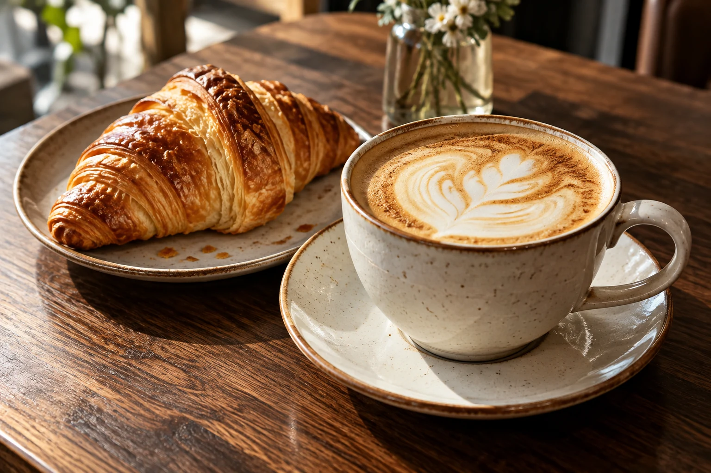
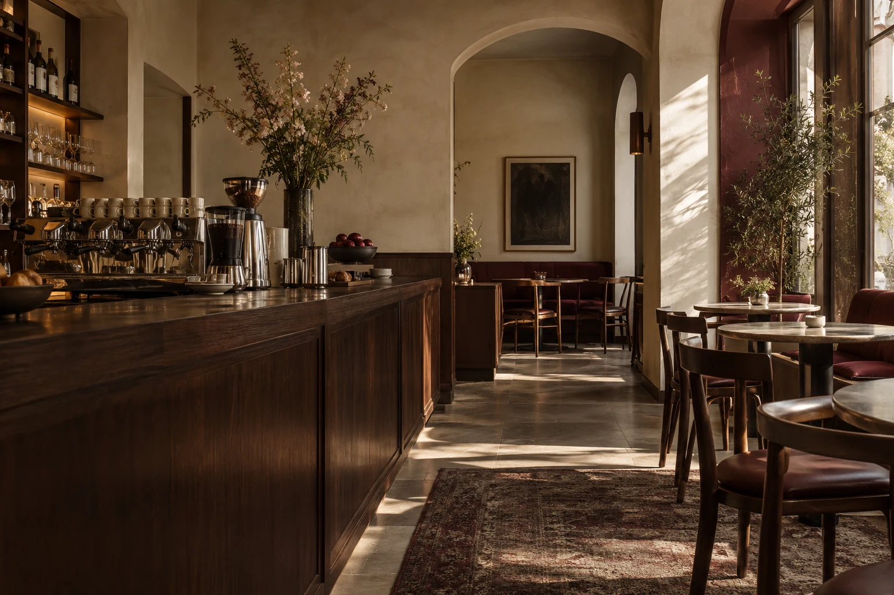
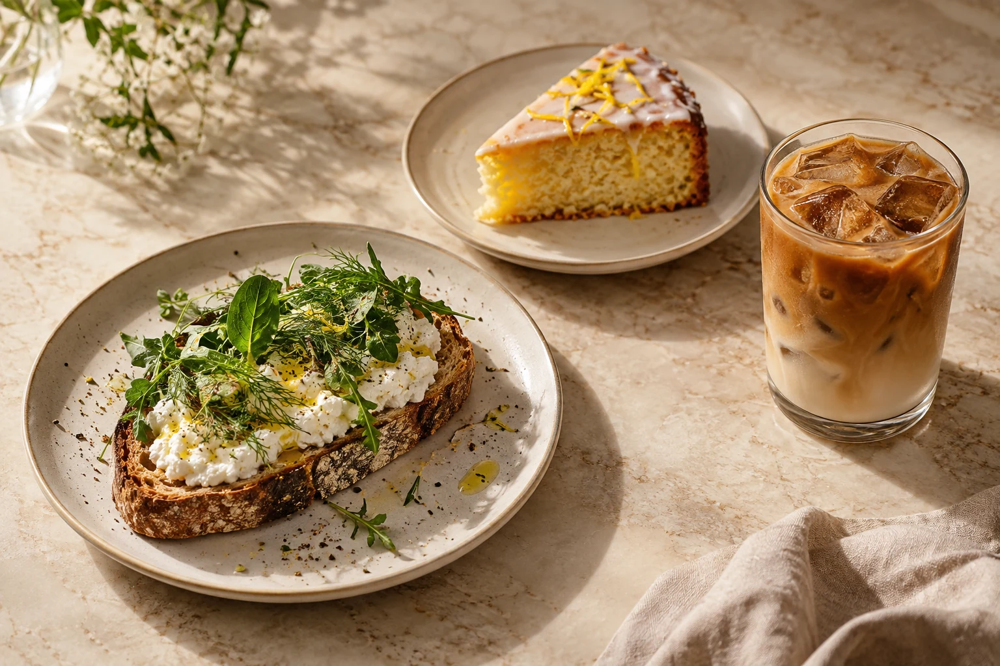

ESPRESSO-BAR & CAFÉ · EIN KONZEPT
Ein guter Kaffee.
Ein bisschen Zeit.
Für den ersten Schluck am Morgen.
Für etwas Warmes aus dem Ofen.
Und für die Momente dazwischen.
entdecken

EINFACH GUT. BIS INS DETAIL.01 / DAS CAFÉ
Weniger Eile.
Mehr Augenblick.
Ein Platz am Fenster. Der Duft von Espresso. Ein Gespräch, das etwas länger dauert.
Still ist unsere Idee von einem Café, in dem die einfachen Dinge zählen: sorgfältig zubereiteter Kaffee, eine überschaubare Karte und ein Raum, in dem man gerne bleibt.
Die Idee kennenlernen ↗
Manchmal ist das Beste am Tag
eine kleine Pause.
03 / DIE KLEINEN DINGE
Einfach.
Aber nie beliebig.
Knusprige Kruste, weiche Krume. Cremiger Milchschaum. Die Frische einer Zitrone. Gute Zutaten brauchen nicht viel – nur die richtige Aufmerksamkeit.
Unsere kleine Auswahl ↗
UND DIE GROSSE LUST AUF GUTES.
04 / ZU BESUCH
Ihr neuer
Lieblingsplatz?
So könnte sich der digitale Auftritt Ihres Cafés anfühlen. Einladend, klar und mit Raum für das, was Ihr Haus besonders macht.
Café Still ist ein fiktives Beispielprojekt von LL Collective Studio. Es gibt keinen realen Cafébetrieb. Standort, Öffnungszeiten und Kontaktdaten werden für ein echtes Café individuell ergänzt.
Noch einmal durch die Karte ↗